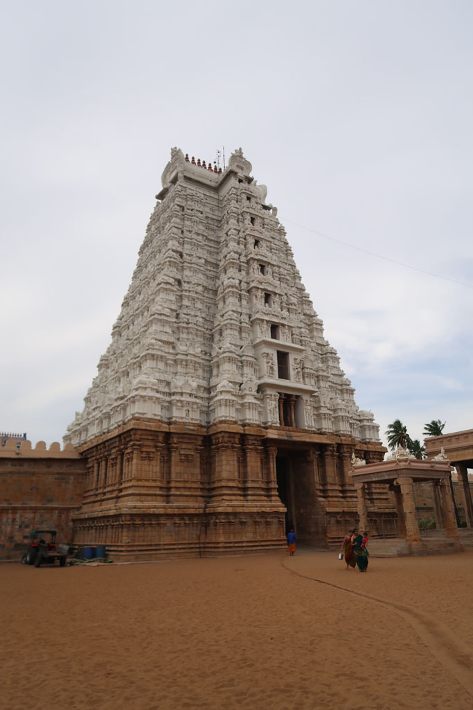
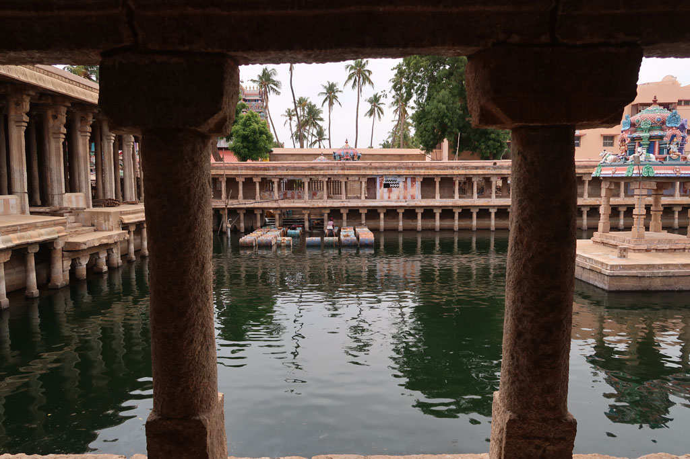

/ Vers Trichy
6h20 Réveil
7h00 On quitte l’hôtel en uk tuk pour la gare routière de Trivandrum
8h00 Bus pour Nagercoil.
10h15 Arrivée à Nagercoil
10h40 Bus pour Madurai
15h30 Arrivés à Madurai, coup de bol, c’est le bus dans lequel nous sommes qui continue vers Trichy.
15h40 départ pour Trichy
18H30 Arrivés à la gare de Tiruchirappalli alias Trichy, nous partons à pieds à la recherche de notre hôtel.
19h00 Nous posons les sacs dans la chambre et on ressort chercher à manger.
19h30 dans cette cantine nous sommes l’attraction pour tout le staff. Nouilles sautées, masala dosa du Chettinad, onion utapam, cheese naan, lemon soda x2, lemon juice x3, cafés x3 468R. Nous nous régalons.
20h45 retour à l’hôtel après un passage DAB.
21h00 dodo pour tous.

